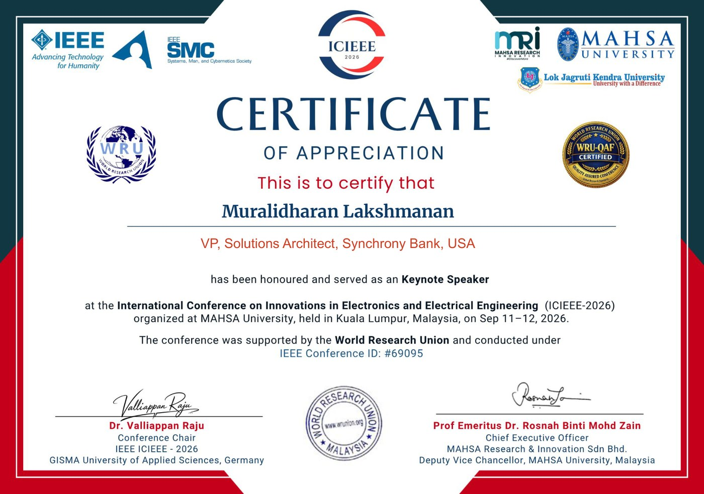
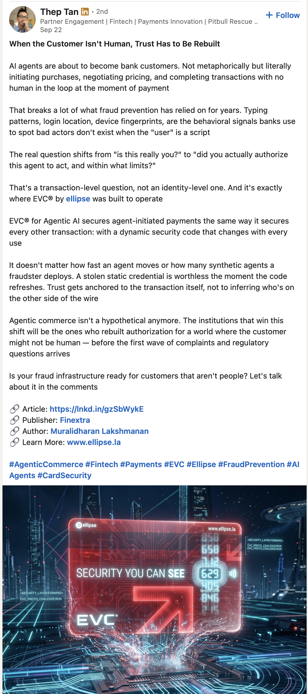

Add photoimages/collide-2026-keyur-vyas-linkedin.jpg Fellow panelist's LinkedIn post
Agents in the Enterprise: Context, Control, and Reality
Panelist · COLLIDE Data & AI Conference (Data Science Connect), Sandy Springs Performing Arts Center, Atlanta · 1 Oct 2026
Panel on running AI agents in large enterprises, moderated by Honeywell's Sr. Director of Data Management, Governance & AI Strategy, with senior data and AI leaders from Capital One, EXP and TelevisaUnivision. We covered moving beyond prompts to enterprise-grade AI systems, what agents should remember and forget, and what it takes to scale an agentic system from prototype to production. Fellow panelist Keyur Vyas (Senior Director, Capital One) independently described the session in a LinkedIn post naming the full panel (last photo).
Career Research in the AI Era: Tools, Insights, and Opportunities
Featured Speaker & Judge · Career Compass Series, Kennesaw State University (CCSE) · 30 Sept 2026
Workshop for computing students on what employers actually need in the AI era: beyond familiarity with AI tools, the problem-solving, systems thinking, domain knowledge, communication and judgment needed to apply technology responsibly.
Add photoimages/icieee-2026-slide.jpg Talk title slide

Add photoimages/icieee-2026-keynote-certificate.jpg Certificate of Appreciation
From Cloud-Native to AI-Native: Engineering the Intelligent Enterprise
Industry Keynote Speaker · ICIEEE-2026, World Research Union / MAHSA University, Kuala Lumpur · 11–12 Sept 2026
Keynote at the International Conference on Innovations in Electronics and Electrical Engineering, with proceedings in IEEE Xplore. The talk showed how everyday AI-driven banking and retail experiences depend on real-time data infrastructure, for technical and non-technical audiences alike.
How AI Is Disrupting Our Industry, and What We Can Do About It
Interview · Authority Magazine (Medium) · 8 October 2026
Featured in Authority Magazine's interview series on AI disruption. I discuss how generative and agentic AI are changing financial services, from software development to customer operations; why AI should earn autonomy gradually, with governance, auditability and human accountability built into the architecture from the start; and the PACE framework I developed for agentic AI.
The Finextra article has been cited independently by an industry professional, Thep Tan, in a LinkedIn post building his argument around the same thesis. This is unsolicited external validation that the thinking is shaping industry discussion of agent-initiated payment security.

Add photoimages/thep-tan-linkedin.png Screenshot of Thep Tan's LinkedIn post (save it now)
Evidence of this influence is publicly accessible across conference programmes and committee listings, published proceedings and journals, articles on DZone, Finextra and Dev.to, an Authority Magazine interview, and independent coverage by Zee News: a multi-platform public record independent of my employer. Fellowships, Technical Program Committee membership and peer-review certificates are on the Inspiration and Recognition page.
References
ECPDC 2026 — 3rd International Conference on Edge Computing, Parallel and Distributed Computing https://www.ic-ecpdc.org/